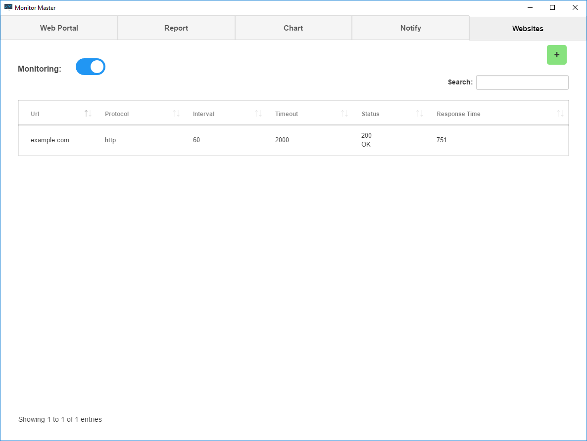
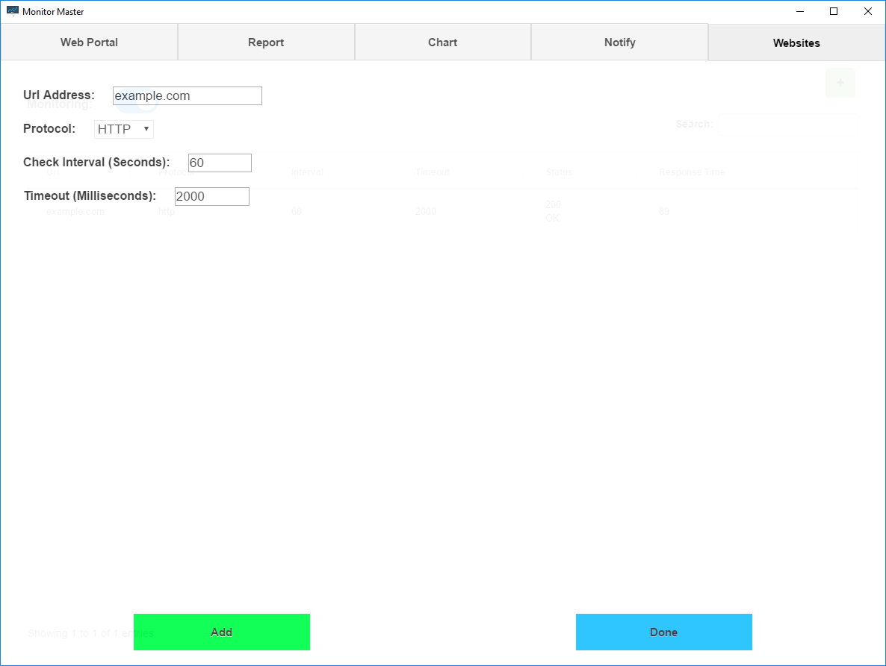
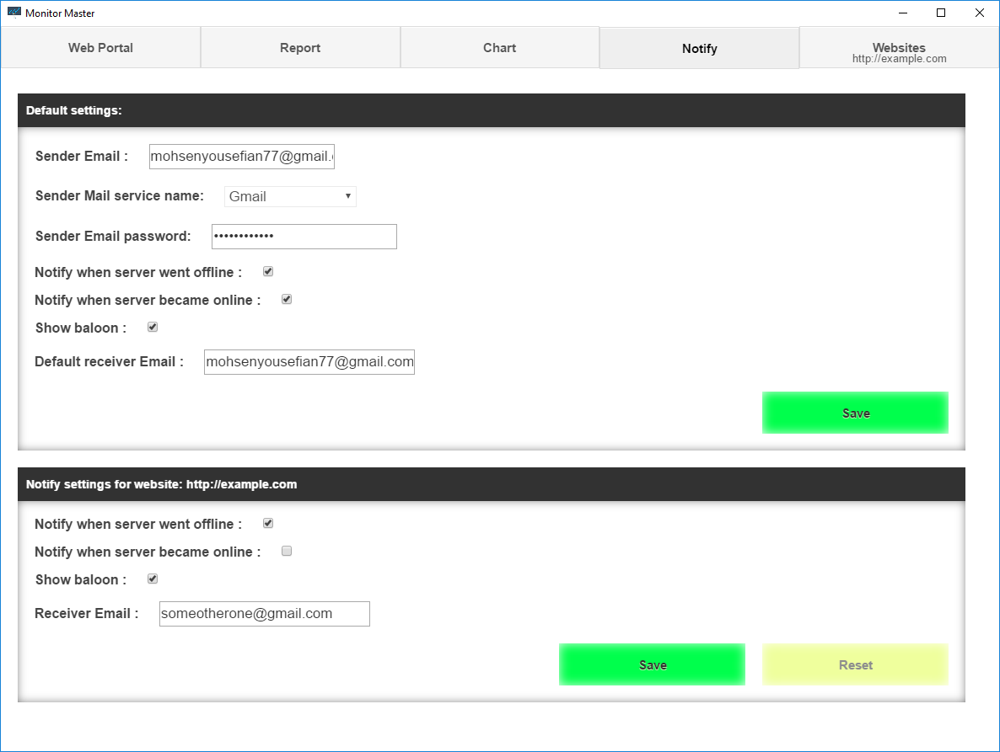
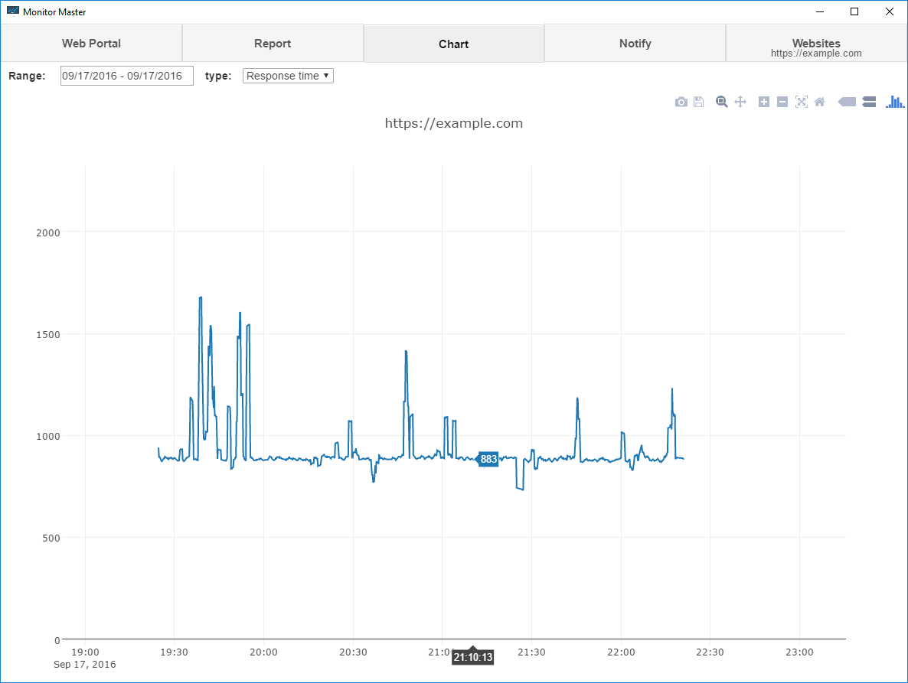
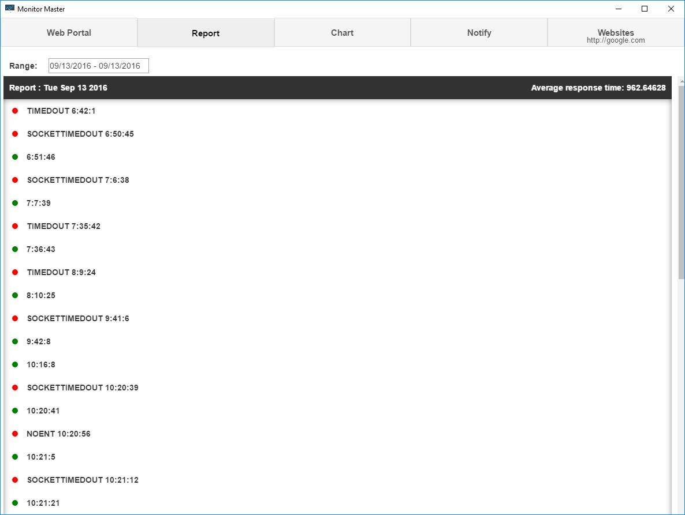
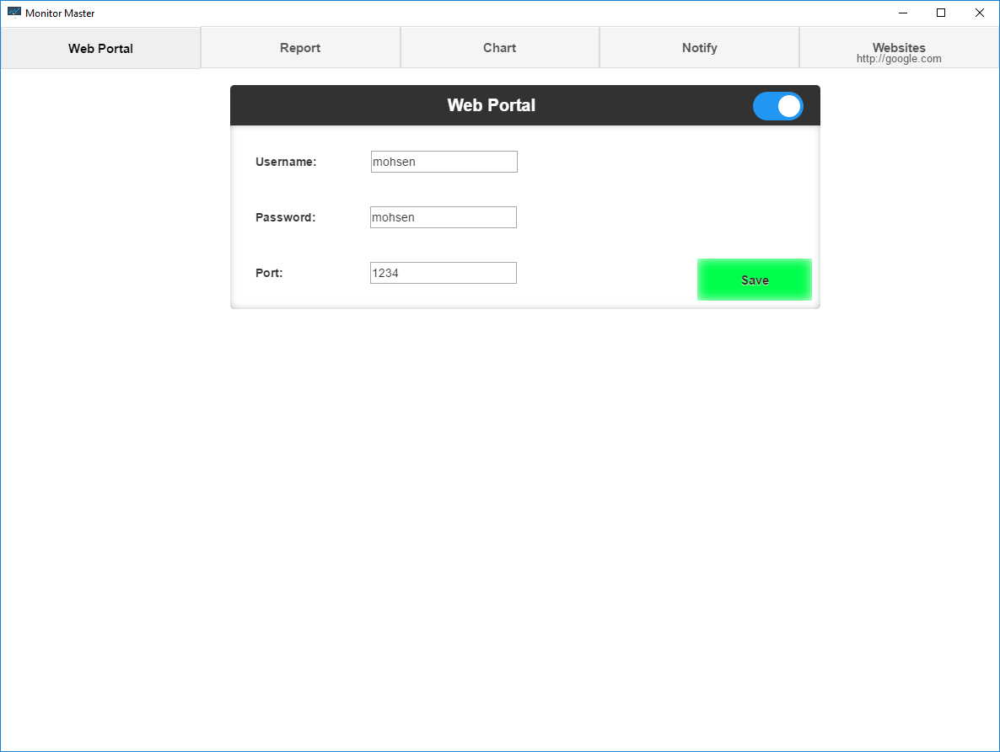

Main Window
You can hide app to tray by minimizing app.
Websites

In this section you can add, edit, delete and have a quick list of information of websites.
Response time: it is time spent to wait, connect and fully receive data from website.
Add

You can add websites in this window.
Url Address: Enter address website you want to monitor without portocol here.
Protocol: You can select HTTP or HTTPS for protocol of websites you want to monitor here.
Check Interval: Time to delay before checking websites availibility and response time each time.
Timeout: Monitor master will stop waiting for websites response and consider it as error if websites doesnt respond after time you enter.
After you are done adding websites click "Done" button
Notify

In this section you can change notifying preferences.
To edit settings for a website and not default select that website from Websites tab
Note: on first attempt to send email on gmail google will email you about an app that tried to access gmail and asks if you want to allow them to access your accout. Accept that request, next time emailing will work as expected.
Settings
Sender Email: your email wich notifying emails are going to be sent from.
Sender Mail service name: sender email's service provider.
Sender Email password: send email's password.
Receiver Email : Email that you want to send email alert to.
If options in down input are not set for a website then default settings will be used for notifying.
Chart

In this section you can view charts for your website's availability and reponse time.
Date range
Click Date input to select range or one day to view chart for that range of time. Ranges are selected in utc but datas are shown in local time.
Report

In this section you can view detailed report for your website.
Date range
Click Date input to select range or one day to view report for that range of time. Ranges are selected in utc but datas are shown in local time.
Web Portal

In this section you can change settings for web portal or turn it on or off.
Using web portal you can control app from other devices on port you defined.
In your browser navigate to http://<computer ip>:<port you defined> to access this portal.